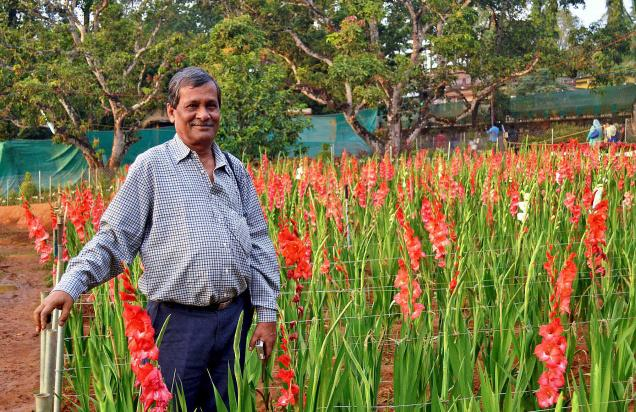

<div id="single-portfolio">
	<div id="portfolio-details" class="container">
		<a class="close-folio-item" href="#"><i class="fa fa-times"></i></a>
		
		<div class="row">
			<div class="col-sm-9">
				<div class="project-info">
					<h3>Flower farming by Dr. Unnikrishanan from Keral. (केरल में फूल की फसल, डा. उन्नीकृष्णन।)</h3>
					<p>Dr. Unnikrishanan explaining how flower farming can bring revolution to kerala. What inspired them to take this off path. He want to share his experience with all.</p>
					<p>जानिए अधिक जानकारी डा उन्नीकृष्णन केरल से, बता रहे है क्या उन्हें सुझा के फूलोंकी फसल का तरीका केरल में उन्होंने आजमाया।</p>
				</div>
			</div>
			<div class="col-sm-3">
				<div class="project-details">
					<h3>Details</h3>
					<p><span>Speaker: </span>Dr. Unnikrishnan, Kerala (डा उन्नीकृष्णन केरल)</p>
					<p><span>Date:</span> 15 Feb 2016 (१५ फरवरी २०१६)</p>
					<p><span>Subject (विषय):</span>Flower Farming (फूल की फसल)</p>
					<p><span>Channel (चैनल):</span>Vividh Bharati Delhi (विविध भारती देहली)</p>
				</div>  
			</div>
		</div>
	</div>
</div>